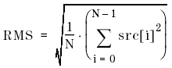

DSP_RMS
This API computes the Root Mean Square (RMS) of the elements in the specified array as follows:

where N is size.
This API is defined in the header file /opt/hp93000/soc/prod_com/include/MAPI/libdsp.h.
Syntax
DSP_RMS(ARRAY_I& src, DOUBLE *rms); DSP_RMS(INT *src, DOUBLE *rms, INT size); DSP_RMS(ARRAY_D& src, DOUBLE *rms); DSP_RMS(DOUBLE *src, DOUBLE *rms, INT size);
I/O |
Parameter |
Description / Range |
|---|---|---|
I |
src |
Source array |
O |
rms |
Root mean square |
I |
size |
Number of elements to be processed 2 ≤ size ≤ 2097152 size ≤ (size of src) |
Example
int array1[64]; double rms; . . DSP_RMS(array1, &rms, 64);
DSP_RMS computes the RMS of the first 64 elements in the array array1 , and returns the result to rms .